Hi, I’m James
Nonstationary Rainfall Frequency Estimates for Texas
@AGU 2023, NH14B-07
JAMES DOSS-GOLLIN
Rice University
Civil & Environmental Engineering
Yuchen Lu (Rice)
Benjamin Seiyon Lee (GMU)
John Nielsen-Gammon (TAMU)
Rewati Niraula (TWDB)
IDF CURVES UNDERPIN RISK ASSESSMENT


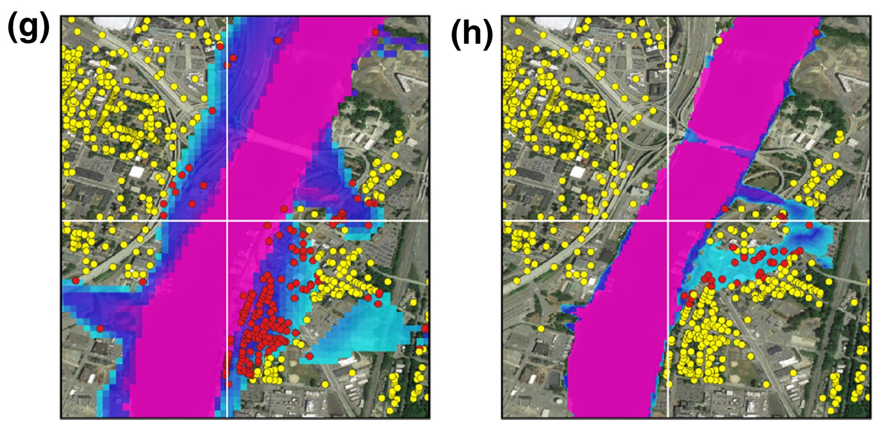
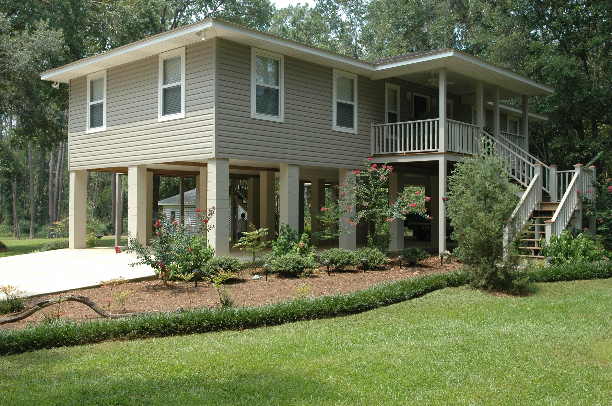
EXISTING GUIDANCE LEAVES GAPS
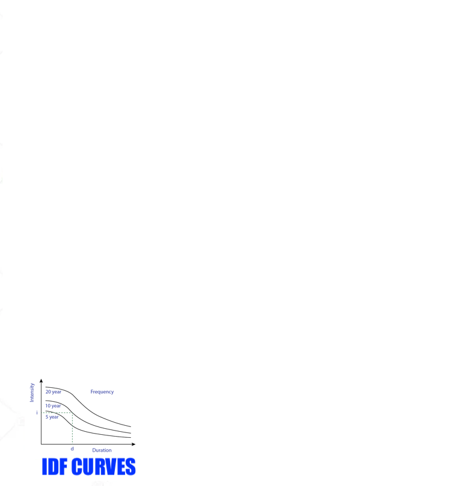
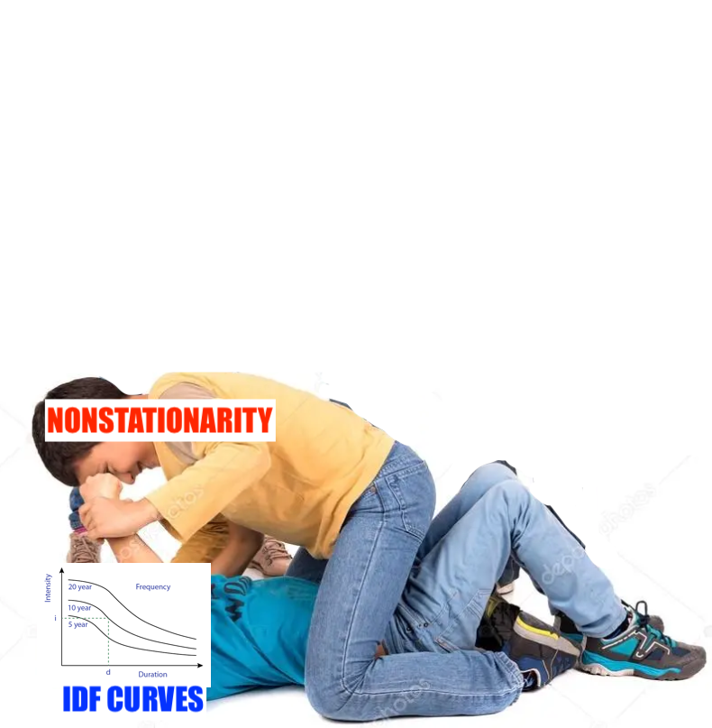
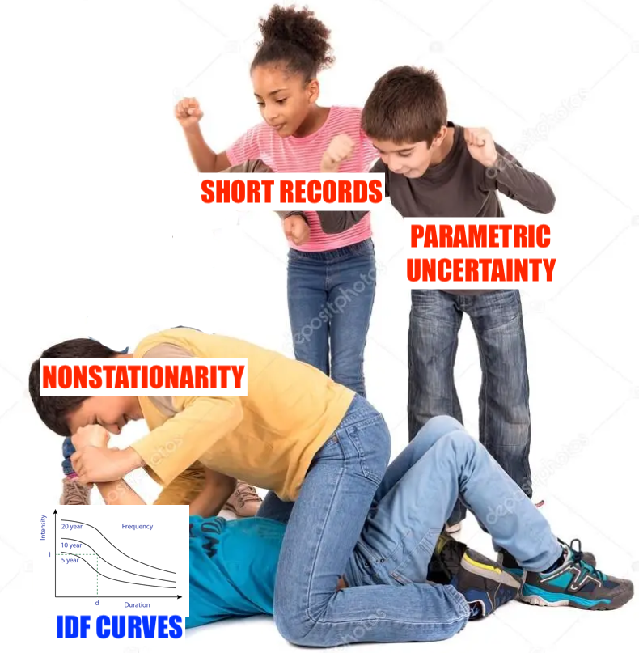
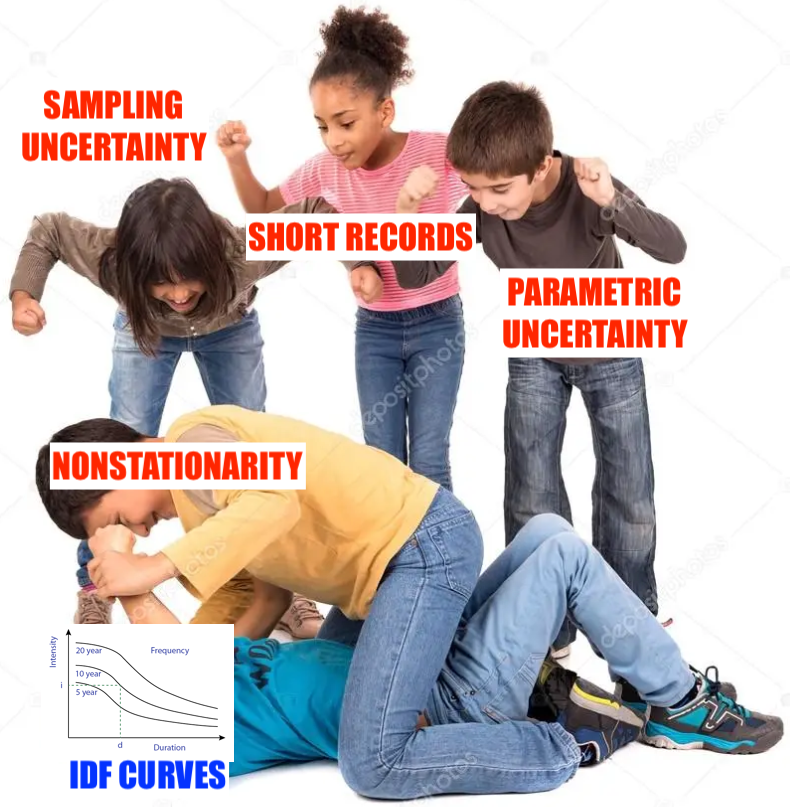
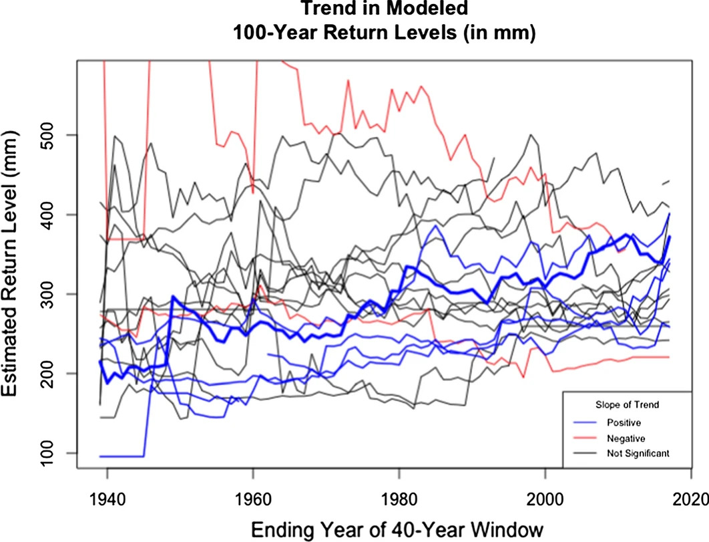
CLIMATE IS CHANGING BUT RANDOMNESS CHALLENGES TREND ESTIMATION
Fagnant et al. (2020): each line is a gauge from the same \(5^\circ \times 3^\circ\) region
NONSTATIONARY MODELS
NEED MORE PARAMETERS
Generic nonstationary model for annual maximum precipitation: \[ y(\vb{s}, t) \sim \text{GEV} \left( \mu(\vb{s}, t), \sigma(\vb{s}, t), \xi(\vb{s}, t) \right) \]
Process-informed models condition parameters on climate indices \(\vb{X}(t)\) (Cheng & AghaKouchak, 2014; Schlef et al., 2023) \[ \theta(\vb{s}, t) = \alpha + \overbrace{\beta(\vb{s})}^\text{more params} \times \overbrace{\vb{X}(t)}^\text{climate} \] for \(\theta \in \{\mu, \sigma, \xi \}\)
NONSTATIONARY MODELS
INCREASE ESTIMATION UNCERTAINTY
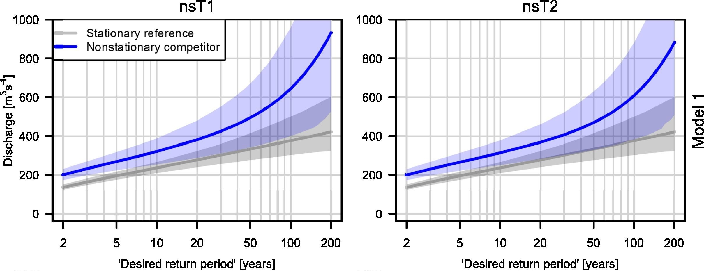
Serinaldi & Kilsby (2015): more parameters, same data ➡️ posterior uncertainty 📈
TWDB-FUNDED RICE-TAMU COLLAB
MORE/BETTER DATA
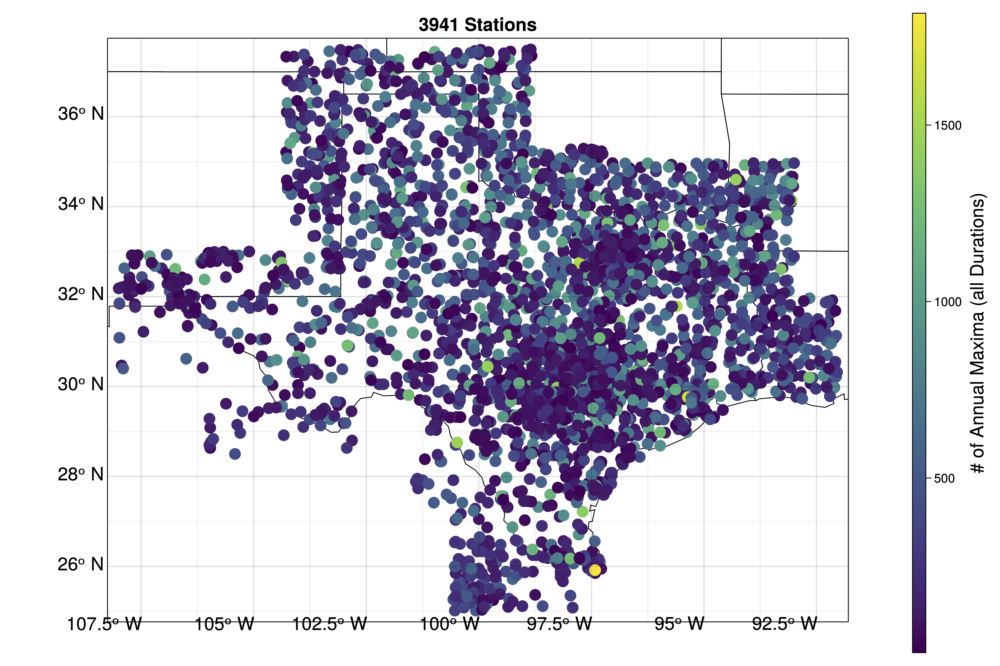
We use long-record gauges AND newer mesonets
🤝
SPATIALLY VARYING COVARIATES
- framework: Bayesian hierarchical model (flexible, probabilistic)
- hypothesis: parameters are smooth
- model: latent parameters as spatial fields (Moran basis functions)
MORE CO\(_2\) ➡️ LARGER AND MORE VARIABLE EXTREMES
Show only the increasing trends here:
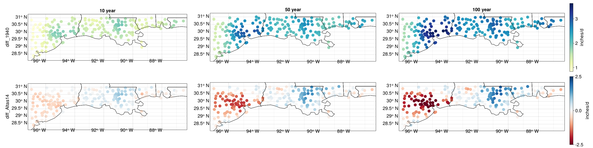
WE FIND HIGHER HAZARD THAN ATLAS-14 EXCEPT IN HARVEY-IMPACTED AREAS
DIAGNOSTICS SUGGEST EXTREME PROBABILITIES ARE WELL-CALIBRATED
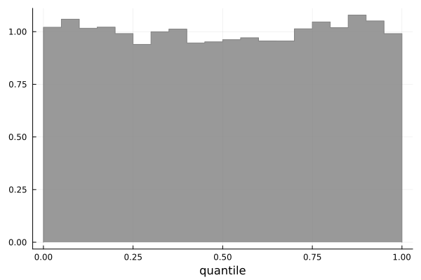
SUMMARY
Bayesian space-time model:
✅ Reduce estimation uncertainty
✅ Explicitly spatial (free interpolation)
✅ Well-calibrated
❌ Zap sampling variability